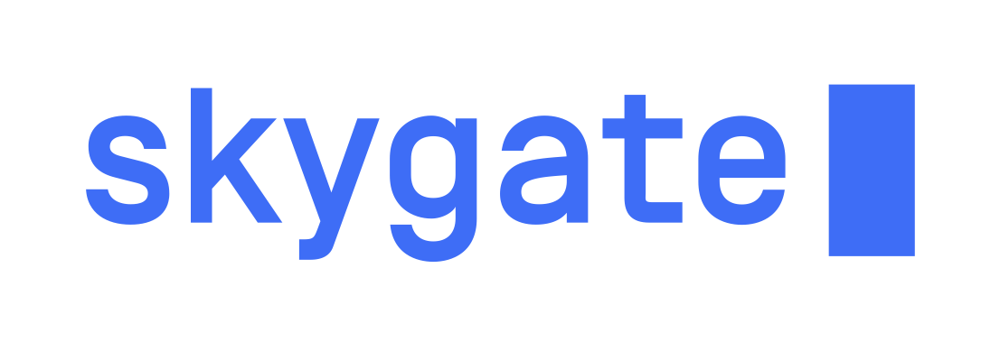

Why I don't test private methods
Andrzej Kopeć
What is the unit in unit testing?
What's the purpose of unit testing?
Let's have such code
class Wizard {
public currentStep = this.steps[0]; //It doesn't have to be a plain field
constructor (private steps) {}
public goNext () {
this.goToStep(this.getNextStep());
}
public goBack () {
this.goToStep(this.getPreviousStep());
}
private goToStep (step) {...}
private getNextStep () {}
private getPreviousStep () {}
}
Encapsulation
Bad
it('should go to given step', () => {
const step = new Step()
(wizard as any).goToStep(step);
expect(wizard.currentStep).toBe(step);
})
Worse
class TestableWizard extends Wizard {
public goToStep (step) {
super.goToStep(step);
}
}
Single Responsibility Principle
private goToStep (step) {
//a lot of very important validation logic
//and so on...
this.currentStep = step;
}
Open-closed Principle
Let's add validation!
class Wizard {
//...
private goToStep (step) {
if (!this.currentStep.isValid()) {
return;
}
//...
}
}
it('should check current step before moving to another', () => {
makeCurrentStepInvalid();
(wizard as any).goToStep(anyOtherStep);
expect(wizard.currentStep).toBe(currentStep);
});